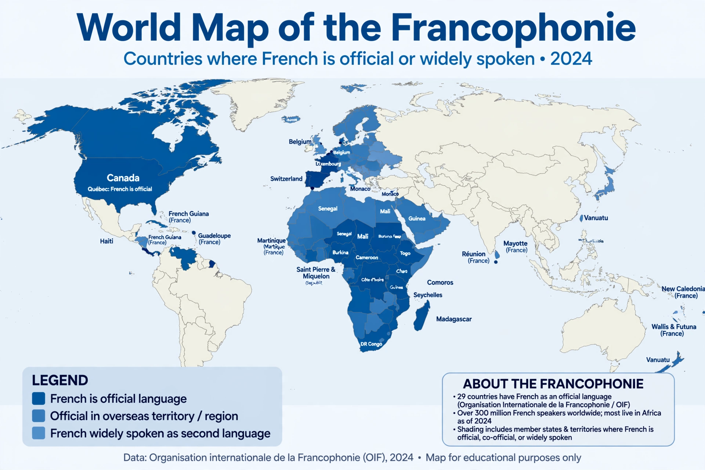

French language

Native to: France, Belgium, Switzerland, Canada, much of West and Central Africa
Native speakers: c. 80 million; c. 310 million total
Language family: Indo-European → Italic → Romance
Writing system: Latin (French alphabet)
Regulated by: Académie française
French (français) is a Romance language of the Indo-European family descended from the Vulgar Latin of Roman Gaul. It is an official language in 29 countries, including France, Belgium, Switzerland, Canada and many African states, and is spoken by about 310 million people worldwide. French was for centuries the international language of diplomacy and remains a working language of the United Nations, the European Union and the International Olympic Committee.
History
The earliest text generally considered French is the Oaths of Strasbourg (842). Old French emerged from the northern dialects (langues d'oïl), while the south spoke Occitan (langues d'oc). Frankish influence from the Germanic Franks gave French much of its distinctive vocabulary and stress pattern. In 1539 the Ordinance of Villers-Cotterêts mandated French in administration. The Académie française, founded by Cardinal Richelieu in 1635, has since regulated the language. Through colonisation French spread to the Americas, Africa, Asia and Oceania.
Grammar and phonology
French nouns have two genders and are typically preceded by articles; verbs conjugate for person, tense and mood. Its sound system is known for nasal vowels, liaison between words, and the guttural or trilled /r/. Much vocabulary derives from Latin, with notable borrowings into English after the Norman Conquest of 1066 — up to a third of English words have French origins. See Grammar and Phonetics.
See also
Spanish language · German language · Language family · Semantics